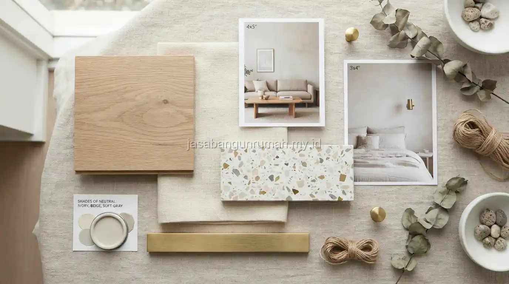

Daftar Isi
Tahapan desain interior rumah umumnya dimulai dari penyusunan layout 2D untuk tata letak ruang, dilanjutkan gambar 3D untuk visualisasi bentuk, penyusunan moodboard untuk konsep warna dan material, hingga tahap eksekusi lapangan.
Tahap Penyusunan Layout 2D
Layout 2D adalah gambar tampak atas ruangan yang menunjukkan penempatan furnitur, jalur sirkulasi, serta pembagian zona fungsional seperti area duduk, area makan, atau area kerja dalam satu ruangan.
Tahap ini penting dilakukan lebih dulu karena menjadi dasar perencanaan sebelum masuk ke tahap visual yang lebih detail, memastikan seluruh furnitur yang direncanakan dapat tertata dengan baik tanpa mengganggu jalur sirkulasi penghuni.
Kesalahan pada tahap layout 2D akan berdampak pada tahap selanjutnya, sehingga proses ini membutuhkan pengukuran ruangan yang akurat sejak awal. Hal-hal yang biasanya ditentukan pada tahap ini meliputi:
- Dimensi dan posisi setiap furnitur utama
- Jalur sirkulasi antar ruangan dan zona fungsional
- Penempatan pintu, jendela, dan titik pencahayaan
- Pembagian area berdasarkan fungsi (area kerja, area santai, area makan)
Tahap Penyusunan Gambar 3D
Setelah layout 2D disepakati, desainer akan menyusun gambar tiga dimensi untuk memberikan gambaran visual yang lebih nyata mengenai bentuk ruangan, penempatan furnitur, hingga suasana pencahayaan yang direncanakan.
Gambar 3D membantu klien membayangkan hasil akhir ruangan sebelum eksekusi dilakukan, sehingga revisi terhadap tata letak, warna, atau jenis furnitur masih dapat dilakukan tanpa risiko besar.
Tahap ini juga sering digunakan untuk menguji beberapa alternatif konsep sebelum klien menentukan pilihan akhir yang paling sesuai dengan preferensi dan anggaran yang tersedia.
Tahap Penyusunan Moodboard
Moodboard adalah kumpulan referensi visual berupa contoh warna, tekstur material, dan gaya furnitur yang disusun untuk memastikan keselarasan konsep sebelum material dan furnitur benar-benar dipesan atau dibeli.

Moodboard berfungsi sebagai panduan visual bagi tim eksekusi lapangan agar hasil akhir konsisten dengan konsep yang telah disepakati bersama klien, mulai dari pemilihan warna cat, jenis kain pelapis furnitur, hingga material lantai yang akan digunakan.
Tahap ini membantu menghindari ketidaksesuaian antara ekspektasi visual klien dan hasil akhir di lapangan, karena setiap elemen sudah direncanakan secara detail sejak awal. Elemen yang biasanya tercakup dalam moodboard meliputi:
- Palet warna utama dan warna aksen ruangan
- Contoh tekstur dan material lantai (keramik, parket, vinyl)
- Referensi gaya dan warna furnitur yang akan digunakan
- Contoh material pelapis dinding seperti wallpaper atau cat tekstur
- Referensi jenis dan suasana pencahayaan yang diinginkan
Tahap Eksekusi Lapangan
Setelah layout, gambar 3D, dan moodboard disepakati, tahap selanjutnya adalah eksekusi lapangan yang mencakup pemasangan furnitur, aplikasi warna cat, hingga penataan aksesoris sesuai rencana yang telah disusun sebelumnya.
Selama tahap eksekusi, biasanya dilakukan pengawasan berkala untuk memastikan hasil pemasangan sesuai dengan gambar kerja dan moodboard yang telah disepakati, termasuk penyesuaian kecil apabila ditemukan kendala teknis di lapangan.
Bagi pemilik rumah yang ingin mengetahui estimasi biaya untuk seluruh tahapan ini, dapat berkonsultasi langsung dengan tim desainer interior kami sebagai gambaran awal sebelum memulai proses lebih lanjut.